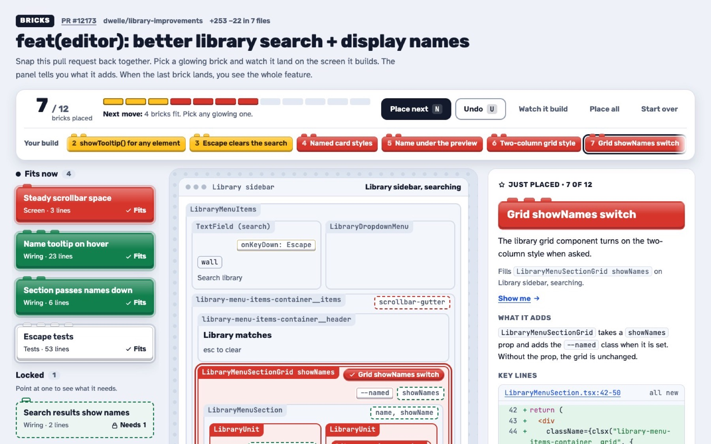

AI writes the pull request. You still have to review it.
AI agents now open pull requests with hundreds of lines across a dozen files. That's too much to read in one go. bricks cuts a pull request into small pieces and gives them to you in the order the feature was built. You check one piece at a time, and you see every line.
236 new lines in 7 files
- Tooltip leaves with its item
- showTooltip() for any element
- Escape clears the search
- Named card styles
- Name under the preview
- Two-column grid style
- Grid showNames switch
- Steady scrollbar space
- Name tooltip on hover
- Section passes names down
- Search results show names
- Escape tests
The same pull request as 12 bricks, in the order it was built. From excalidraw/excalidraw#12173.

Halfway through. Each brick you place fills in its part of the screen, and the panel on the right explains it.
How it works
-
Point it at a pull request
Run
/brickswith a PR link in Claude Code. It splits the change into 8 to 20 bricks: a query, a rule, a component, a test. -
Place the bricks
A brick only fits once the bricks it uses are in place. Each one tells you what it adds and shows the lines that matter.
-
See the whole thing
After the last brick you get a map of what depends on what, and the change in five sentences.
Try it on a real pull request
This one is from Excalidraw. It adds names to library search results. 12 bricks cover all 236 new lines. It's one HTML page, so it works on your phone too.
Install
As a Claude Code plugin
/plugin install bricks --marketplace azizpunjani/bricksThen run /bricks:bricks <PR link>.
Or copy the folder
git clone https://github.com/azizpunjani/bricks
cp -r bricks/skill ~/.claude/skills/bricksThen run /bricks <PR link>.
You need gh (logged in), git, python3 and node 18 or later.